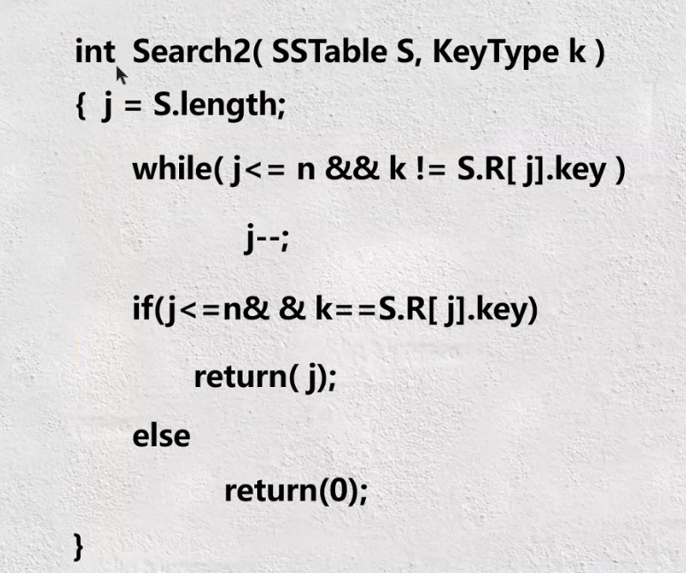
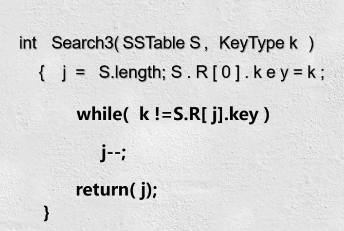

查找表
1.1基本概念
一种以集合为逻辑结构，以查找为“核心”运算，同时包括其他运算的数据结构；由同一累心的数据元素构成的集合。
查找的定义：根据给定的某个值，在查找表中确定一个关键字等于给定值的记录或数据元素。
关键词（Key）：数据元素中某个数据项的值；当数据元素中只有一个数据项时，其关键字就是该数据元素。
1.2查找表分类:
查找表分为静态查找表和动态查找表。
静态查找表：只对查找表进行查勋某个特定的数据元素或某个特定数据元素的各种属性的操作。
动态查找表：对查找表进行插入或删除某个数据元素的操作。
1.3平均查找长度
为确定记录在表中的位置所进行的和关键字比较的次数的期望值；如式1-1所示：
$ASL=\sum_{i-1}^{n}p_{i}c_{i}$
其中n为查找表的长度，pi为查找第i个元素的概率，ci为查找第i个元素时通给定值K比较的次数。
衡量查找算法的标准为：
（1）平均查找长度；
（2）算法所需要的存储量和算法的复杂性等。
1.4顺序查找方法
用待查关键吗Key依次和查找表中元素的关键码进行比较，若找到相等的，就称为查找成功，假设吧整个查找表找完都没有找到和给定关键码相等的元素，则称为查找失败。
顺序查找附加空间开销为0（1），0下标对应的单元。
顺序查找的特点：
（1）算法简单、对查找表的结点之间没有排序要求，表的存储结构也无任何要求（顺序和链式）；
（2）n很大时查找效率很低，与n成反比、平均约为2;
（3）改进措施：非等概率查找时，可按照查找概率进行排序。
顺序表的表示如下所示:
Typedef struct{
Elemtype * R; //表基址
int length; //表长
}SSTable;
从前往后进行查找如下图1.1所示。
从前往后进行查找如下图1.2所示。
带监视哨如下图1.3所示，其中R[]为监视哨。
结论：
（1）当查找概率不等时，如果从前往后进行查找，则按照查找概率由大到小排列的有序表其ASL要比无需表的ASL小；
（2）ASL值最大应该是按照查找概率从小到大排列的查找表。
1.5折半查找方法
折半查找表中结点必须按关键字有序排列；查找表必须顺序存储。
用待查关键字k与线性表中间位置的结点的关键字进行比较：
（1）若相等，则查找成功；
（2）若不相等，则根据比较的结果确定下一步操作：
①若k小于中间结点的关键字，则对前半个子表进行查找；
②若k大于中间结点的关键字，则对后半个子表进行查找。
若整张表都没有满足条件的结点，则查找失败。
折半查找完整算法如下图1.4所示。
哈希表
2.1 基本概念
根据设定的哈希函数H和所选中的处理冲突的方法，将一组关键字映像到一个有限的、地址连续的地址集（区间）上，并以关键字在地址集中的“像”H（key）作为相应记录在表中的存储位置，如此构造所得的查找表称之为“哈希表”。
2.2 直接定址法
H（key）=a·key+b （a,b为常数）。
优点：以关键码key的某个线性函数值为哈希地址，不会产生冲突。
缺点：要占用连续地址空间，空间效率低。
2.3 线性探测法
$H_{i}=\left(H\left (key \right )+d_{i}\right)mod\ m$
其中m为哈希表长度，di为增量序列1,2，...m-1，且di=i（一旦冲突，就找下一个空地址存入）。
2.4 二次探测法
$H_{i}=\left(H\left (key \right )+d_{i}\right)mod\ m$
其中：m为哈希表长度，di为增量序列 $1^{2},-1^{2},2^{2},-2^{2},....,q^{2}$。
2.5 链地址法（拉链法）
将具有相同哈希地址的记录存储在同一个单链表中，m个哈希地址就对应m个单链表，然后用一个一维数组将m个单链表的表头指针存储起来，形成一个动态的结构。
排序
3.1排序的基本概念
设有{R1,R2,...,Rn}是由n个记录组成的文件，{k1,k2,...,kn}是相应的排序码的集合。
排序是将记录按排序码不增（或不减）的次序排列起来的运算。计算机内经常进行的一种操作，其目的是将一组“无序”的记录序列调整为“有序”的记录序列。
排序算法的稳定性：键值相等的记录排序后保持原来的顺序则稳定，否则不稳定。
3.2排序的分类
（1）按待排序文件规模的大小分类：
①内部排序：在内部进行的排序；
②外部排序：在外存设备上进行的排序。
（2）排序方法的分类：
①插入类，如直接插入排序、折半插入排序、2-路插入排序、希尔排序；
②交换类：冒泡排序、快速排序；
③选择类：简单选择排序、锦标赛排序、堆排序；
④归并类：归并排序；
⑤其他方法：基数排序。
3.3待排序记录的存储方式
在排序的过程中通常需进行下列两种基本操作：
（1）比较两个关键字的大小；
（2）将记录的从一个位置移动到另一个位置。
待排序记录可有以下三种存储方式：
（1）待排序的一组记录存放在地址连续的一组存储单元数；
（2）一组待排序的记录放在静态链表中，记录之间的次序关系由指针实现；
（3）待排序记录本身存储在一组地址连续的存储单元内，同时有另一个指示各个记录存储位置的地址向量。
3.4排序算法效率的指标
评价排序算法好坏的标准：
（1）算法执行时所需要的时间（最重要的标准）；
（2）执行算法所需要的附加空间。
3.5常用排序方法：
①直接插入排序
②冒泡排序
③快速排序
④简单选择排序
⑤堆排序
⑥归并排序
⑦基数排序